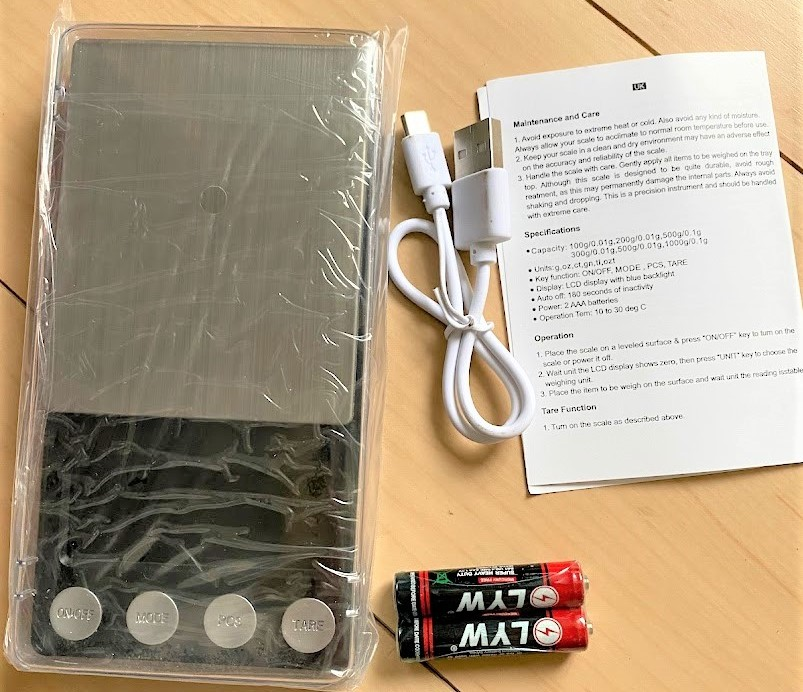
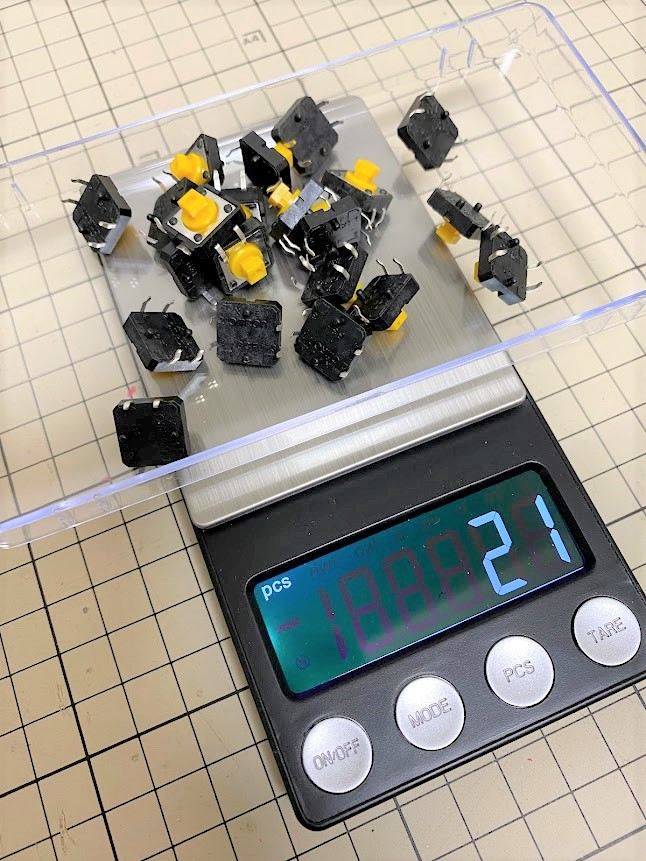

この記事はBanggoodの提供でお届けします。
以前紹介したようにこのブログはBanggoodと提携させていただいており、今回紹介する500g 0.01 Electronic Mini LCD Digital DIY Jewelry Scale(以下 「Electronic Mini LCD Digital Scale」)も、Banggoodからいただいたものとなります。（Electronic Mini LCD Digital Scaleのレビューがしたい！と言ったのは自分なので、Banggoodが無理やりこの商品を押しているわけではなく、inajobの一押しアイテム！、という感じです。）
Electronic Mini LCD Digital Scale とは

精密な電子計りです。コンパクトな作りですが意外と多機能です。
- 最大500gまで計ることが出来、有効精度は0.01g
- 単4電池2本 またはUSBによる充電の2系統の電源をサポート
- g/oz/tl/gn/ct と様々な単位に対応
- 1個当たりの重さを登録することで、それが何個乗っているかを計る「カウント機能」（ただし最低でも25個乗せてサンプリングする必要がある点に注意）
- 容器の重さなどを考慮できる ゼロリセット機能
活用事例
私は電子工作のキットの販売などをしており、細かい電子部品の個数を数える場面が多いのですが、この計りがあれば細かいカウント作業なしに簡単に数えることが出来ます。
まずは25個乗せてサンプリングをしたのちに、カウント作業が実行できます。このため同じ部品を特定の個数、大量に小分けするような作業に向いています。
ほら、タクトスイッチ21個。

単純な計りですが、思った以上に作業がはかどります。
日常生活においては、台所の計りなどとしても活用できます。

クーポンコード
さて、ここまで紹介してきたElectronic Mini LCD Digital Scaleですが、今回Banggoodの提供という事で、$15.99 → $9.99で購入できるクーポンを頂いています。
コード： BGJP655 (11/30まで)
Electronic Mini LCD Digital Scaleをカートに入れ、チェックアウト後にこのクーポンコードを入力することで割引を受けることが出来ます。
有効期限は2021/11/30なので、買いたい方はお早めにどうぞ！（加えて、在庫に限りがあると思うのでお早目に！）


関連記事